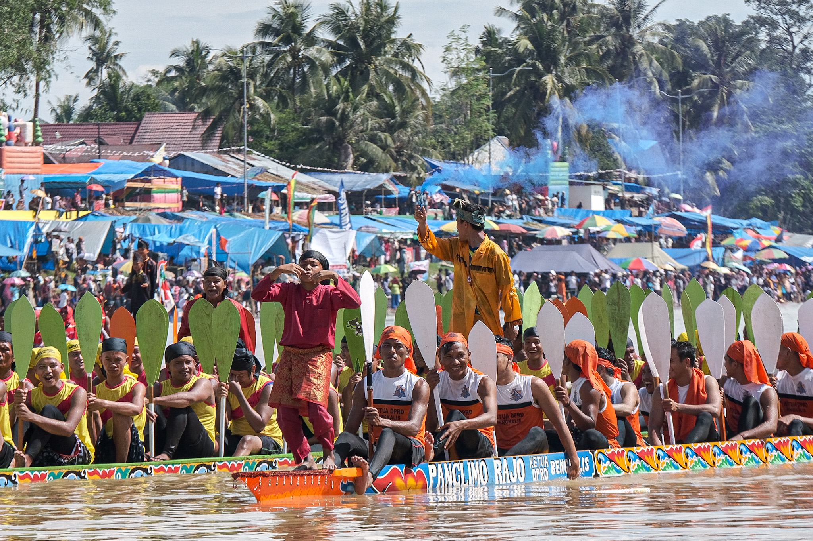
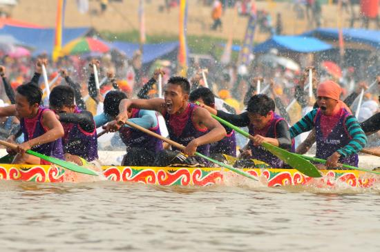

Pacu Jalur merupakan tradisi lomba perahu panjang yang berasal dari Kabupaten Kuantan Singingi, Provinsi Riau. Tradisi ini telah berlangsung sejak ratusan tahun lalu dan menjadi salah satu festival budaya terbesar di daerah tersebut.
Wisata Pacu Jalur menarik banyak wisatawan karena keunikan perlombaan perahu tradisional yang dilakukan di Sungai Kuantan. Selain menyaksikan perlombaan, pengunjung juga dapat menikmati budaya lokal, kuliner khas daerah, serta keindahan alam di sekitar sungai.
Email: wisata.pacujalur@email.com
Instagram: @wisatapacujalur